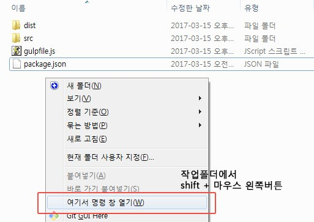
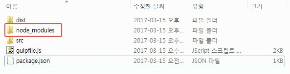
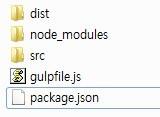
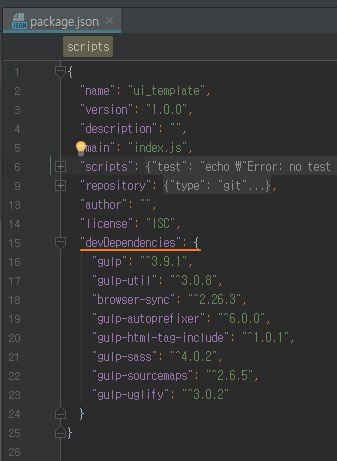
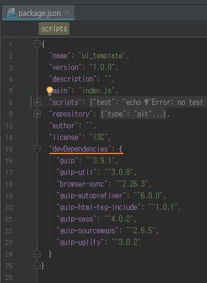

01. Node.js 설치
https://nodejs.org/ko/ 설치 후 npm -v 으로 버전 확인02. gulp 설치
STEP 1. cmd창 열기
방법1. 작업할 폴더 경로에서 shift + 마우스 오른쪽 버튼 -> '여기서 명령창 열기'

방법2. 작업할 폴더 주소창에 'cmd' or 'cmd .' 입력
 STEP 2. cmd창의 작업경로 확인
STEP 2. cmd창의 작업경로 확인
STEP 3. 같은 폴더경로에 'node_modules' 폴더 생성 cmd창에 npm init, npm install 차례로 입력 D:\test>npm init D:\test>npm install 
작업 폴더
 dist: 최종 작업본, Gulp에 의해 빌드 된 파일, 산출물 배포 시 사용 src: 실제 작업 폴더(sass, include 전 파일)
gulp 세팅(sass, html include파일 등 빌드)
기본적으로 GOMLAB의 gulpfile.js 세팅을 참고한다.
browser-sync, sass, html-include등 작업에 유용한 모듈은 이미 포함되어있으나 프로젝트에 따라 유동적으로 작업이 가능하다.
필요에 의해 추가/수정시 먼저 팀에 공유해야 한다.
Gulp 사용법은 아래 블로그 참고 http://programmingsummaries.tistory.com/356
모듈관련 검색 https://www.npmjs.com/
 
